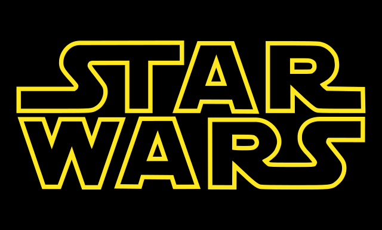

<mat-toolbar class="toolbar" role="banner">
  <mat-toolbar-row fxLayout="row" fxLayoutAlign="center center">
    
    <button fxFlex mat-button routerLink="/films">Films</button>
  </mat-toolbar-row>
</mat-toolbar>

<div class="content" role="main">
  <router-outlet></router-outlet>
</div>
